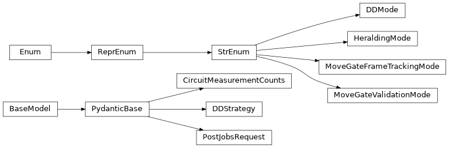

circuit#
Models related to quantum circuit execution.
Full path: iqm.station_control.interface.models.circuit
Module Attributes
Sequence of PRX gates. |
|
QIR program code in string representation. |
|
Sequence of quantum circuits to be executed together in a single batch. |
|
Measurement results from a single circuit. |
|
Type that represents measurement results for a batch of circuits. |
|
Mapping from logical qubit names to physical qubit names. |
|
Measurement results in histogram representation for each circuit in the batch. |
Classes
Circuit measurement counts in histogram representation. |
|
Dynamical Decoupling (DD) mode for circuit execution. |
|
Describes a particular dynamical decoupling strategy. |
|
Heralding mode for circuit execution. |
|
MOVE gate reference frame tracking mode for circuit compilation. |
|
MOVE gate validation mode for circuit compilation. |
|
Request to Station Control run a job that executes a batch of quantum circuits. |
|
alias of |
Inheritance
